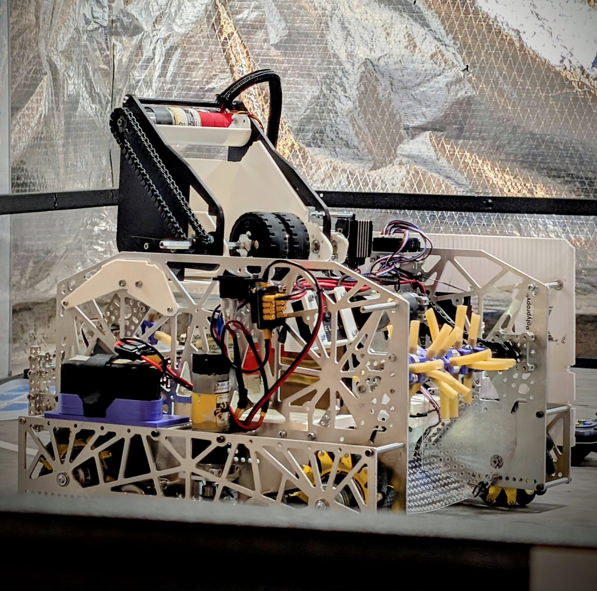
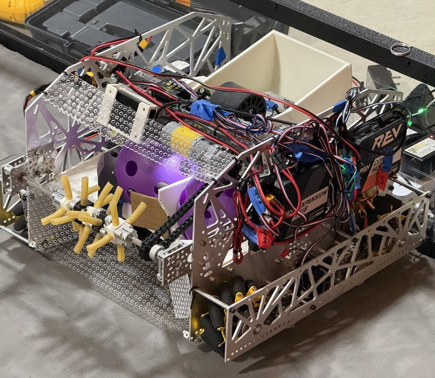
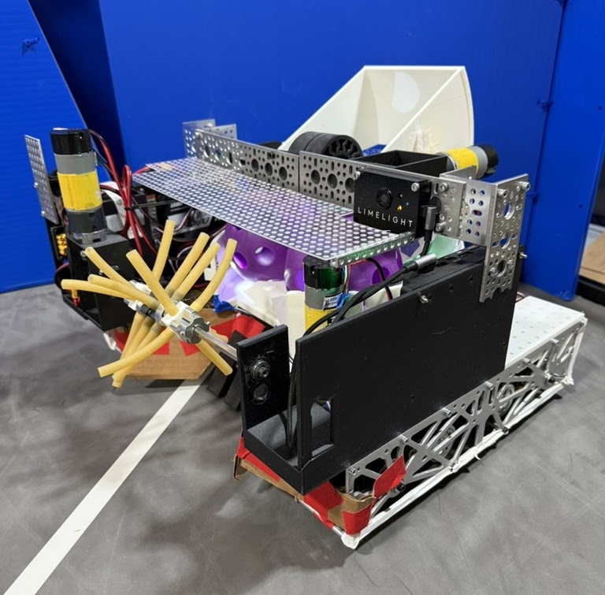
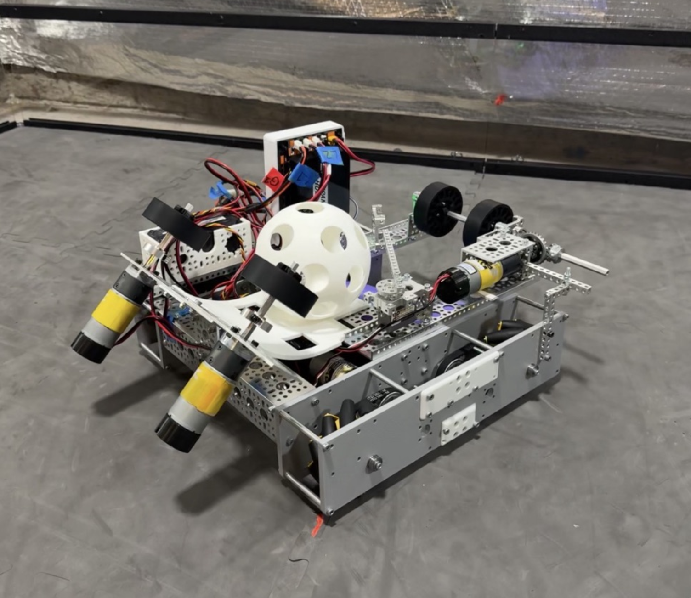
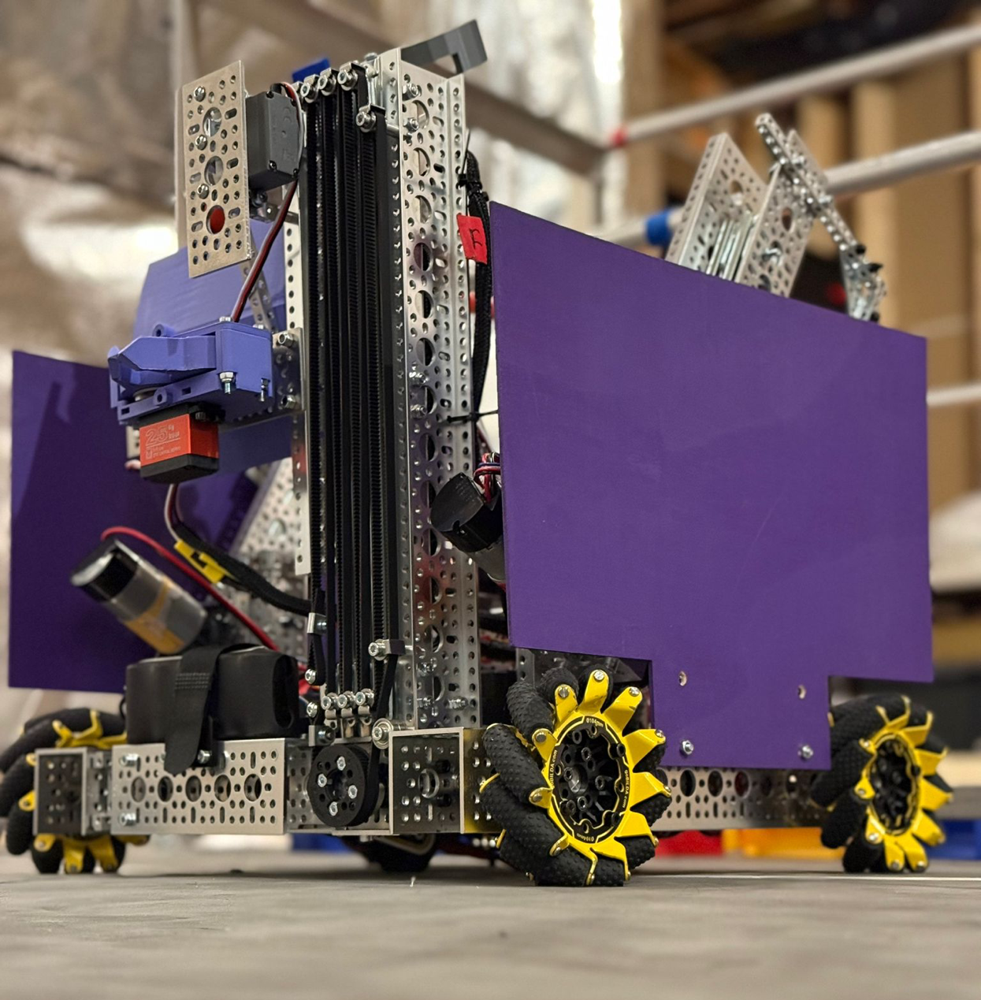
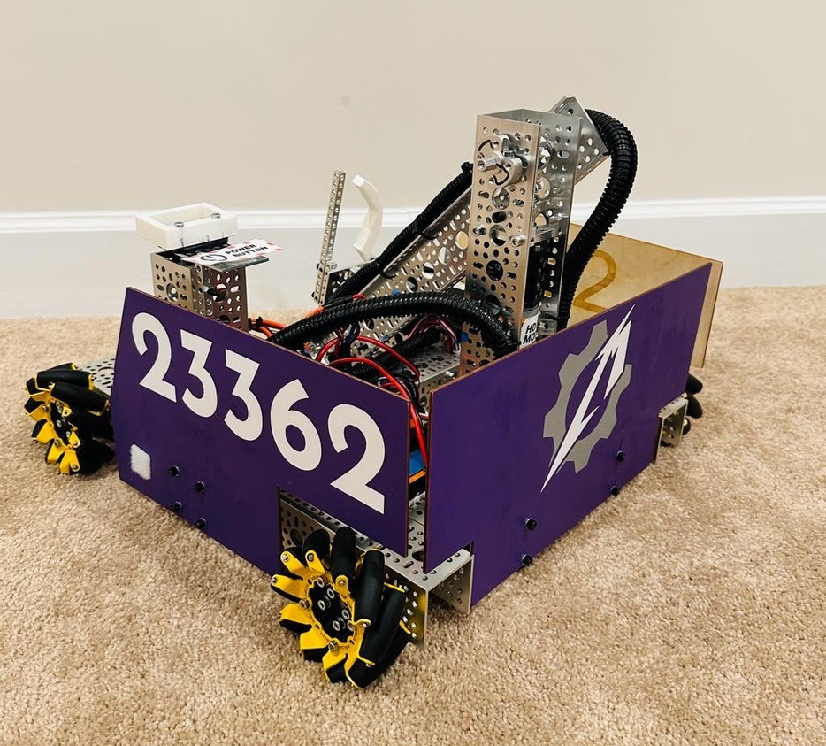

V4 Magic Machine
Improved iteration of V3 with a more reliable launching system. Built a 12-ball sorted autonomous with leave points and placed 9th in Blue Crab division at Chesapeake Championship.

Robot Systems
Our design history moves from rookie mecanum builds to custom panels, autonomous sorting, odometry, and reliable game-piece launchers.
Improved iteration of V3 with a more reliable launching system. Built a 12-ball sorted autonomous with leave points and placed 9th in Blue Crab division at Chesapeake Championship.

Used at the 2nd and 3rd qualifiers and qualified for Chesapeake Championship twice. Featured custom aluminum side panels and drivetrain, a lowered 3D-printed spindexer, angle-adjustable launcher, and a 9-ball autonomous with motif pattern plus leave points.

First competition robot with surgical tubing intake, spindexer, and adjustable launcher. Qualified for playoffs and was mostly 3D-printed or custom machined.

Gecko wheel vertical spinning intake plus horizontal Gecko wheel launcher, mounted on a custom chassis that was lighter with a lower center of gravity than the previous goBilda Strafer.
Watch reveal
12 ball sorted autonomous for states/regionals
goBilda drivetrain with odometry pods and Pinpoint IMU. Two linear slides with hook for hanging, arm and claw for sample intake and transfer to a pivoting bucket, specimen scoring arm, and a front bumper for sample pushing.

goBilda drivetrain with mecanum wheels and a single rotating arm motor with claw to pick up and score pixels on the backdrop.
